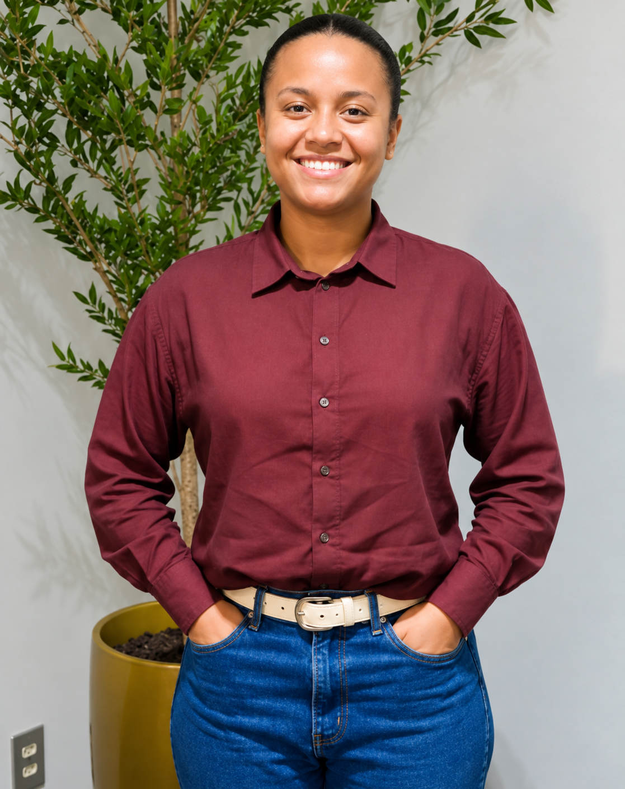
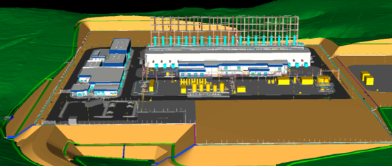

01
Comprometimento
Esforço para fazer com que as coisas funcionem.
A UTE Tupã Fase I é um empreendimento de geração de energia elétrica da SJE – São João Energia S.A., localizado no município de Macaé, Rio de Janeiro.
O empreendimento prevê a implantação de uma usina termelétrica com capacidade instalada de aproximadamente 177 MW, utilizando gás natural para geração de energia.
Este portal foi criado para formar um cadastro de profissionais e empresas interessados em participar das oportunidades relacionadas à implantação da UTE Tupã Fase I.
Fazer cadastroSelecione abaixo a opção correspondente ao seu perfil.
Para profissionais interessados em cadastrar seu currículo, experiência e qualificações para futuras oportunidades relacionadas ao empreendimento.
Cadastrar currículoPara empresas interessadas em apresentar seus serviços, produtos, experiência e portfólio para futuras oportunidades relacionadas ao empreendimento.
Cadastrar empresaAcreditamos que grandes projetos são construídos por pessoas com diferentes conhecimentos, experiências e perspectivas.
Por isso, incentivamos a participação e a contratação de mulheres em todas as áreas e níveis profissionais compatíveis com suas qualificações.
A UTE Tupã Fase I quer ampliar oportunidades, promover um ambiente de trabalho diverso, respeitoso e inclusivo e contribuir para que cada profissional possa construir sua própria trajetória.
Se você é mulher e busca uma oportunidade para desenvolver sua carreira, cadastre seu currículo e venha fazer parte desse projeto.

Localizada no município de Macaé, no Rio de Janeiro, a UTE Tupã Fase I está inserida em um contexto estratégico de fortalecimento da infraestrutura energética nacional.
O empreendimento contribuirá para a diversificação da matriz elétrica, para o atendimento à demanda de energia e para o aumento da confiabilidade do sistema.
Além da usina termelétrica, o projeto contempla estruturas e sistemas associados necessários à sua implantação e operação, incluindo instalações de conexão ao sistema elétrico e demais infraestruturas de apoio.

Uma visão do modelo tridimensional do empreendimento, contemplando sua implantação e principais estruturas.
Princípios que orientam nossas decisões, nossa forma de trabalhar e nossas relações.
Esforço para fazer com que as coisas funcionem.
Esforço para superar metas.
Simplicidade, respeito e pés no chão.
Retidão, imparcialidade e honestidade.
Predomínio do mérito, da dedicação e do trabalho.
Capacidade de se adaptar às mudanças.
A vida como um valor absoluto.
Mais do que um empreendimento de geração de energia, a UTE Tupã Fase I representa a construção de um novo capítulo para a região e para todos que participarão dessa jornada.
Juntos, vamos construir um projeto que gera energia, oportunidades e desenvolvimento.